WooCommerce Custom Fields plugin is a WooCommerce extension which allows you to create custom fields of various types. With help of this plugin you can create customizable products, product add-ons, display custom product properties, gather additional information on checkout, manage orders more efficiently.
As soon as you install WooCommerce Custom Fields, you will find the following menu links in the admin interface:
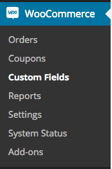
Product Fields are fields that appear on the frontend product page for users to fill in before they add a product to the cart. Use Product Fields to make a product configurable, offer product add-ons and gather additional information about user preference.
To manage Product Fields, go to WooCommerce > Custom Fields > Product Fields.
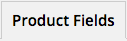
Product Properties are fields that are available on product edit pages for shop managers to fill in. Product Properties can be private or public. Public Product Properties are displayed on product pages and are used to provide customers with more information about each product.
To manage Product Properties, go to WooCommerce > Custom Fields > Product Properties.
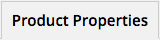
Checkout Fields appear on the Checkout page and are used to gather additional information from customer, e.g. preferred delivery time, their VAT number for European customers etc. Checkout Field data then appears in a dedicated box on the order page.
To manage Checkout Fields, go to WooCommerce > Custom Fields > Checkout Fields.
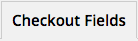
Order Fields are used to provide additional information about each order in a structured way. The first use case for Order Fields is to create private fields and use them to store information related to order processing, help with managing orders, add private notes etc. In addition to that, Order Fields can also be used to provide additional information about orders that is then available to customers in My Orders.
To manage Order Fields, go to WooCommerce > Custom Fields > Order Fields.
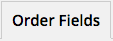
Click on Add Field button to add a new field.
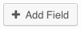
Fields are presented as a sortable list of collapsible content boxes. Click on the arrow icon on the left and drag to change the order of fields. Click on the X (delete) icon on the right to delete a field.
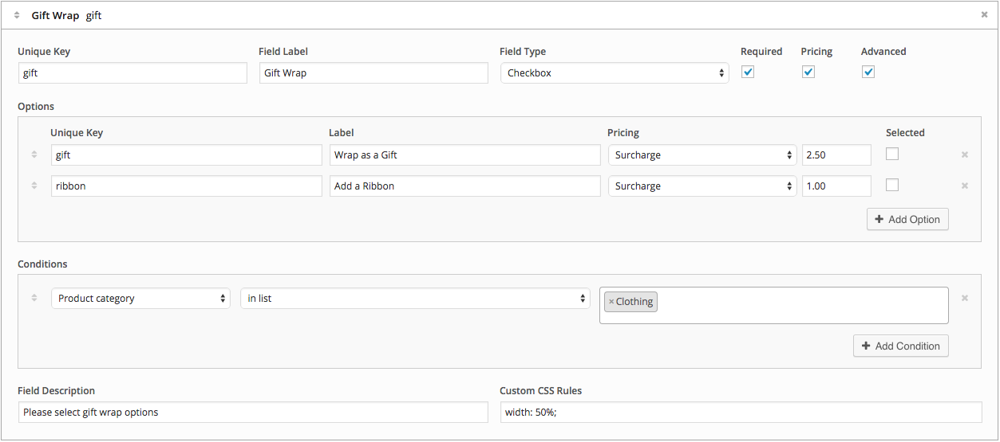
The following settings are available:
Additional settings available for Product Fields:
Additional settings available for Product Properties:
Additional settings available for Checkout Fields:
Additional settings available for Order Fields:
The following field types are available:
Fields of type select, multiselect, checkbox and radio buttons must have one or more options for users to choose from. When one of these four field types is selected, options panel will appear.
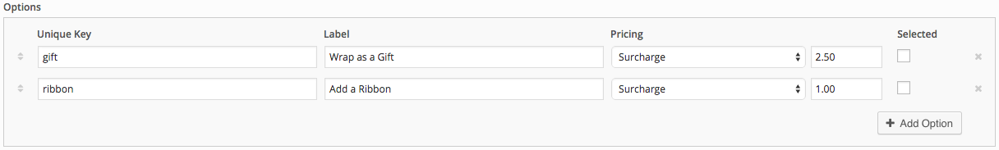
To add a new option click on Add Option.
Each option contains the following settings:
In addition to that, if Pricing is enabled for a field, the following settings will be displayed for each option:
If Advanced is checked for a field, Conditions panel will be displayed. Conditions are used to hide specific fields when specific conditions are not matched.
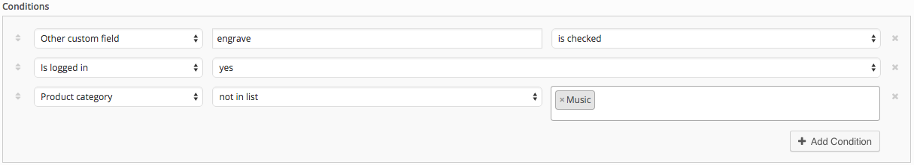
To add a new Condition click on Add Condition.
The following conditions are available:
When a condition is selected, corresponding operator and value fields are displayed.
Product Fields appear on product pages just above Add To Cart button.
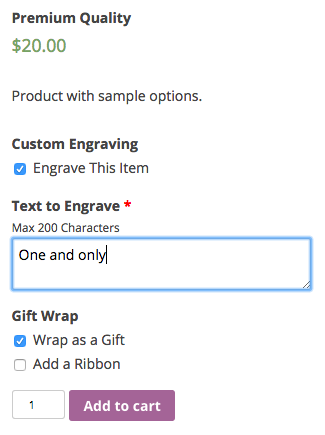
When product is configured and added to the cart, all selections are displayed as cart item meta data.
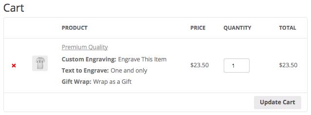
Product Properties appear on product pages on a separate tab.
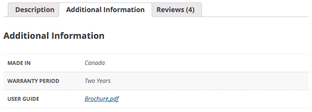
Checkout Fields appear on the Checkout page but their position depends on a corresponding setting selected for each field, i.e. individual fields can be displayed in different positions on the Checkout page.
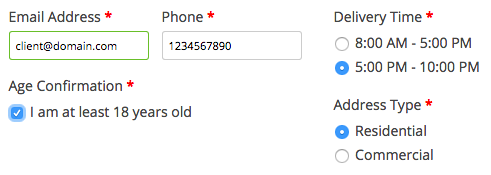
Checkout Fields are also displayed to customers after they place an order on the order view page.
Order Fields are only displayed to customers after they are filled in by a shop manager. Order Field data appears as a list of order related data on the order view page.
Product Properties appear as fields for shop managers to fill in when creating or updating a product in WooCommerce product editor.
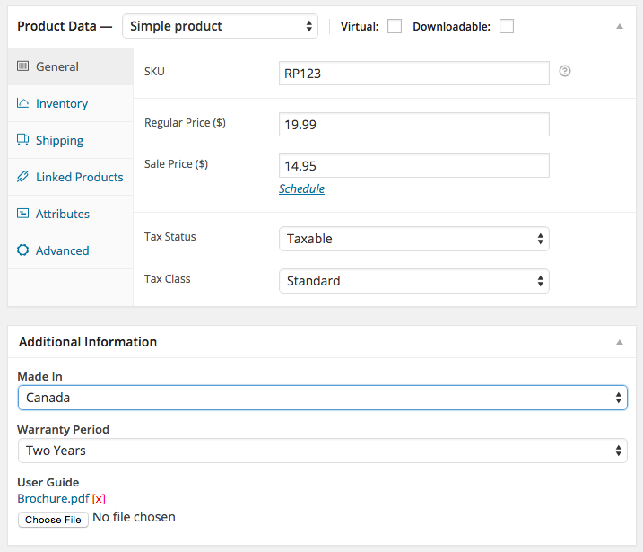
Order Fields appear as fields to be filled in by a shop manager on each order edit page.
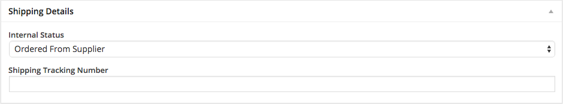
To manage plugin settings go to WooCommerce > Custom Fields > Settings.
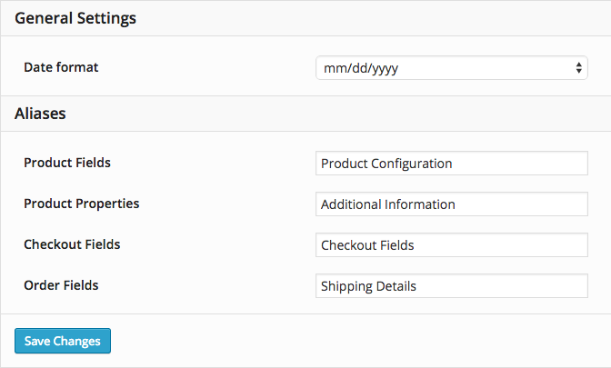
The following settings are available:
If you have any questions, feel free to visit the support center or submit a support ticket.